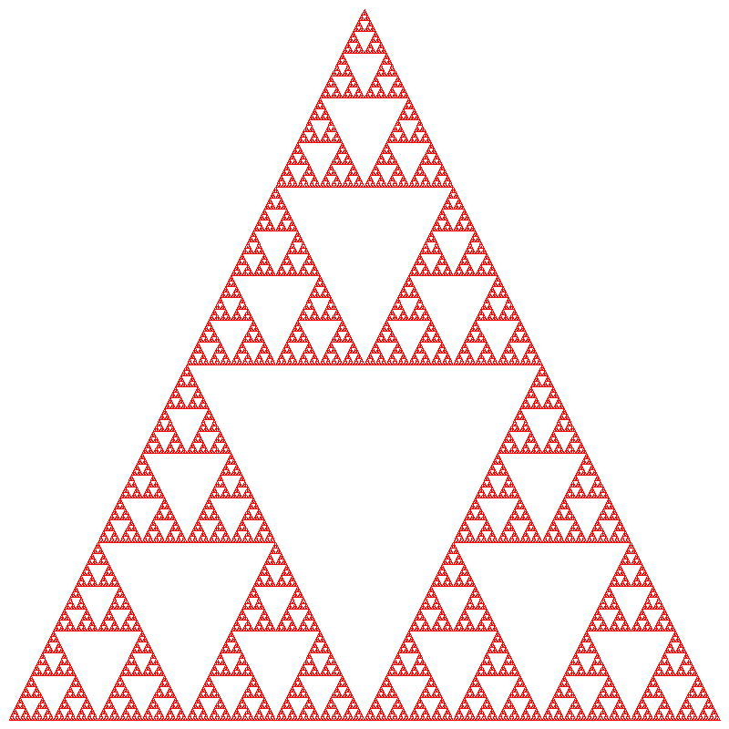
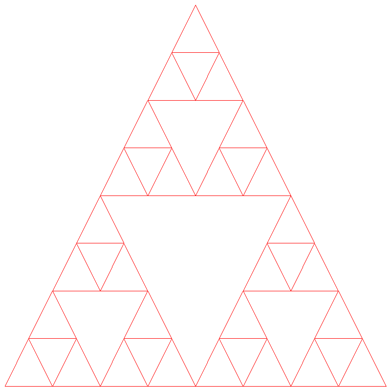

Lab 6: Recursive Drawing (3 Points)
Chris Tralie
Overview / Logistics
The purpose of this lab is to get you practice with recursion with a fun application of drawing fractals, which are "infinitely self-similar shapes."" You can obtain the starter code with
git clone --recursive https://github.com/ursinus-cs174-s2022/Lab6_RecursiveDrawing.git
The code layout is based heavily on lab 3. You will be editing the file fractal.cpp. When you are finished, submit this file to canvas.
Learning Objectives
- Use recursion to implement complex behavior
- Use inheritance to share code between classes
- Use friend classes to keep code simple
Background: Fractals And Self-Similar Shapes
A fractal is a shape which is made up of smaller copies of itself. We'll be starting with something called the Sierpinski Triangle in this lab. The Sierpinski triangle is made up of 3 copies of itself. Let's say we were going to create a Sierpinski Triangle inside of these three points Δ abc:
Then, we'd find the midpoints d, e, and f of line segments ac, ab, and bc, respectively. We would then create the smaller triangles
- Δ aed
- Δ ebf
- Δ dfc
to get this image
If we continue this process recursively for each of the three new triangles, we get this
And if we continue this process recursively on each of the new triangles we get forever, we get the Sierpinski triangle! Below is the kind of image you will make by designing such a recursive function:
Programming Task: Drawing The Sierpinski Triangle (3 Points)
You've started off with a partial solution to lab 3 which includes a solution to the triangle task. I've started you off with a forward declaration for the class SierpinskiTriangle in shape.h. This class inherits from Triangle, and it is also a friend class of Triangle, which means that it can access protected member variables of Triangle directly. This makes it so you don't need public getter methods to access a Triangle object's points or line segments.
Your Task: Complete an implementation of SierpinskiTriangle by filling in the recursive helper method drawRec in fractal.cpp. I have provided a program sierpinski.cpp which is an entry point to draw. It takes 3 parameters:
- The resolution of the canvas, in pixels
- The maximum depth of the recursion, where the first triangle drawn is considered depth 0
- The name of the filename to which to output the file
As an example, running
should yield this image
and calling
Extra Credit: Drawing The Koch Curve (+1 Point)
The Koch curve is a recursively defined curve that starts with a line segment and subdivides it as follows:
Repeating this process will yield the following curve:

There is an entry point executable koch which is similar to sierpinski. To get it to draw the Koch curve, fill in the recursive method drawRec of the KochCurve class.